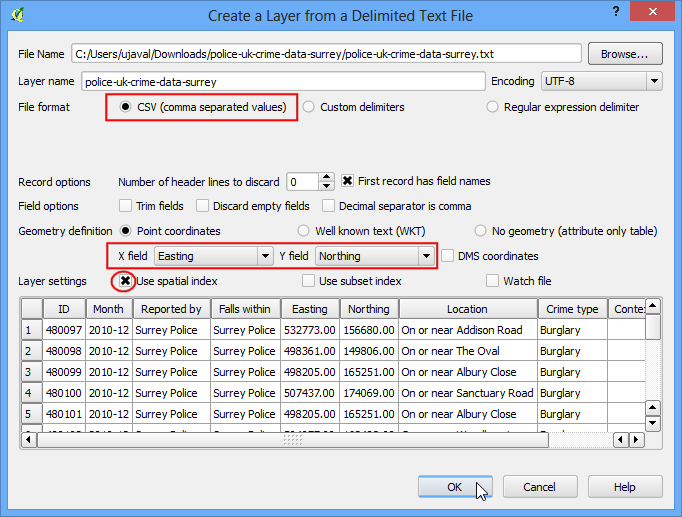

Basis opmaken van vectoren
[ Download PDF A4 Letter ]
Men moet de GIS-gegevens opmaken en ze in een vorm presenteren die visueel informatief is om een kaart te maken. er zijn een groot aantal opties binnen QGIS beschikbaar om verschillende typen symbologie toe te passen op de onderliggende gegevens. In deze handleiding zullen we enkele basisprincipes van het opmaken verkennen.
Overzicht van de taak
We zullen een vectorlaag opmaken om de levensverwachting in verschillende landen van de wereld weer te geven.
Andere vaardigheden die u zult leren
Procedure
Open QGIS en ga naar .

Blader naar het gedownloade bestand lifeexpectancy.zip en klik op Openen. Selecteer newsweek_data.shp en klik op Openen. Vervolgens zal u wordne gevraagd een CRS te kiezen. Selecteer WGS84 EPSG:4326 als het Coördinaten Referentie Systeem (CRS).

Het shapefile dat is opgenomen in het zip-bestand is nu geladen en u kunt de standaard opmaak zien die daarop is toegepast.

Klik met rechts op de laagnaam en selecteer Open attributentabel.

Verken de verschillende attributen. We moeten een attribute of een kolom uitkiezen die de kaart zal weergeven die we proberen te maken om een laag op te maken. Omdat we een kaart willen maken die de levensverwachting weergeeft, d.i. de gemiddelde leeftijd die een mens leeft in een land, is het veld LIFEXPCT het attribuut die we voor het opmaken willen gebruiken.

Sluit de attributentabel. Klik met rechts opnieuw op de laag en kies Eigenschappen.

De verschillende opties voor opmaak staan in de tab Stijl van het dialoogvenster Eigenschappen. Na klikken op het keuzemenu in het dialoogvenster Stijl, zult u zien dat er vijf opties beschikbaar zijn - Enkel symbool, Categorieën, Gradueel, Regel-gebaseerd en Puntverplaatsing. We zullen de eerste drie verkennen in deze handleiding .

Selecteer Enkel symbool. Deze optie laat u één enkele stijl selecteren die wordt toegepast op alle objecten in de laag. Omdat dat een gegevensset van polygonen is, heeft u twee basiskeuzes. U kunt de polygoon vullen, of u kunt hem opmaken met alleen rand. U kunt het vulpatroon gestippeld en klikken op OK.

U zult zien dat een nieuw stijl is toegepast op de laag met het vulpatroon dat u heeft gekozen.

U ziet dat deze stijl Enkel symbool niet erg handig is voor het communiceren van de gegevens voor de levensverwachting die we proberen op de kaart te zetten. Laten we een andere stijloptie verkennen. Klik met rechts opnieuw op de laag en kies Eigenschappen. kies deze keer Categorieën uit de tab Stijl. Categorieën betekent dat de objecten in de laag zullen worden weergegeven in verschillende tinten van een kleur, gebaseerd op unieke waarden in een attributenveld. Kies de waarde LIFEXPCT als de Kolom en klik op Classificeren onderin. Klik op OK.

U zult verschillende landen zien verschijnen in verschillende tinten blauw. Lichtere tinten beteken ene lagere levensverwachting en donkere tinten betekenen een hogere levensverwachting. Deze weergave van de gegevens is handiger en toont helder de levensverwachting in ontwikkelde landen vs. onderontwikkelde landen. Dit zou het type stijl moeten zijn dat we zouden willen maken.

Laten we nu het type symbologie Gradueel in het dialoogvenster Stijl verkennen. Het type symbologie Gradueel stelt u in staat de gegevens in een kolom op te breken in unieke klassen en voor elk van deze klassen en andere stijl te kiezen. We kunnen er over denken onze gegevens over de levensverwachting te classificeren in 3 klassen, LAAG, MEDIUM en HOOG. Kies LIFEXPCT als de Kolom en kies 3 als het aantal klassen. U ziet dat er meerdere opties Modus beschikbaar zijn. Laten we eens naar de logica achter deze modi kijken. Er zijn 5 modi beschikbaar. Gelijke interval, Kwantiel, Natuurlijke grenzen (Jenks), Standaard afwijking en Mooie grenzen. Deze modi gebruiken verschillende statistische algoritmen om de gegevens op te delen in afzonderlijke klassen.
Gelijke interval: Zoals de naam al aangeeft zal deze methode klassne maken die van dezelfde grootte zijn. Als onze gegevens ene bereik hebben van 0-100 en we willen 10 klassen, zou deze methode klassen maken van 0-10, 10-20, 20-30 enzovoort, waardoor elke klasse bestaat uit dezelfde grootte van 10 eenheden.
Kwantiel - Deze methode zal de klassen zo indelen dat het aantal waarden in elke klasse hetzelfde is. Als er 100 waarden zijn en we willen 4 klassen, zal de methode Kwantiel de klassen zo indelen dat elke klasse 25 waarden bevat.
Natuurlijke grenzen (Jenks) - Dit algoritme probeert de natuurlijke groepen van gegevens te vinden om te maken. De resulterende klassen zullen zodanig zijn dat er een maximale variantie is tussen de individuele klasse en minder variantie binnen elke klasse.
Standaard afwijking - Deze methode zal het gemiddelde van de gegevens berekenen en klassen maken die zijn gebaseerd op de standaard afwijking van het gemiddelde.
Mooie grenzen - Dit is gebaseerd op het statistische pakket R’s mooie algoritme. het is nogal complex maar het mooie in de naam betekent dat de grenzen van de klassen gehele getallen zijn.
Laten we de methode Kwantiel gebruiken om dingen eenvoudig te houden. Klik op Classificeren onderin en u ziet dat er 3 klassen worden weergegeven met hun corresponderende waarden. Klik op OK.
Notitie
Een attribuut, dat moet wordne gebruikt in de stijl Gradueel, moet een numeriek veld zijn. waarden Integer en Real zijn prima, maar als het attirbuutveld van het type String is, kan het niet worden gebruikt in deze stijl van opmaak.

U zult een kaart zien die de landen weergeeft in één van de 3 kleuren die de gemiddelde levensverwachting in het land weergeven.

Ga nu terug naar het dialoogvenster Stijl door met rechts op de laag te klikken en te kiezen voor Eigenschappen. Er zijn nog enkele andere opties voor opmaak beschikbaar. U kunt op het Symbool voor elk van de klassen klikken en een andere stijl kiezen. We zullen de vulkleuren Rood, Geel en Groen kiezen om de lage, medium en hoge levensverwachting aan te geven.

Klik, in het dialoogvenster Symbool selecteren op het vak Kleur.

Klik op een kleur uit het dialoogvenster Selecteer kleur.

U kunt, terug in het dialoogvenster Laag eigenschappen, dubbelklikken on de kolom Label naast elke waarde en de tekst invoeren die u wilt weergeven. Op dezelfde wijze kunt u dubbelklikken op de kolom Waarde om de geselecteerde bereiken te bewerken. Klik op OK als u tevreden bent met de klassen.

Deze stijl bevat zeer zeker veel meer bruikbare kaart dan de eerdere twee pogingen. er zijn helder gemarkeerde klassenamen en kleuren om onze interpretatie van de waarden van de levensverwachting weer te geven.